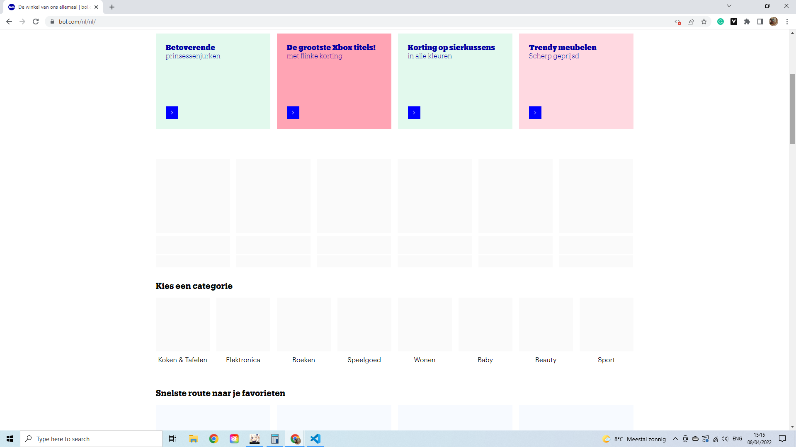

Om Javascript uit te zetten ben ik in de instellingen van google chrome naar de 'Privacy & Beveileging' gegaan en heb ik hier Javascript uitgezet.
Op het eerste oog lijkt het bij Bol.com meteen alsog de hele website niet meer functioneert zonder Javascript. Gelukkig is er meer dan het oog waarneemt.
Zo klopt het dat een paar afbeeldingen niet meer willen laden op bol.com, maar de website functioneert (voor het grootste deel) nog wel.
Zo is het gelukkig nog mogelijk om naar de detailpagina te gaan, maar valt het al snel op dat sommige functies niet werken. Deze functies zijn o.a. sorteren, opslaan als favoriet, vergelijken en filteren.
Ook bij een grotere website zoals Bol.com werken een paar hele grote core-functions niet.
Om mijn internet slomer te maken heb ik in Chrome developer tools geopent en heb ik hier in het tablad 'network' de optie 'no thth' veranderd naar 'slow 3G' om zo te kunnen kijken hoe websites functioneren met een slome netwerkverbinding.
Wat eigenlijk snel te merken is op de grotere websites van vandaag is dat hun het goed doen met slome netwerkverbindingen. Ik heb 2 voorbeelden:
Bij deze 2 websites, Youtube en Instagram merkt je maar heel weinig van je slome internet. Tenminste dat denk je als je dit, voor maar 1 seconden ziet voordat de website geladen is. Nou is het zo dat deze websites natuurlijk fouten gaan hebben, want integenstelling tot de meeste fotos hebben video's veel langer nodig om te laden. Dit merk je bijvoorbeeld op instagram, waar Alles heel snel wordt geladen, maar alle video's vastlopen en weer moeten bufferen na 5 seconden. Youtube daarintegen buffert de video's enorm snel zonder dat het de kwaliteit van de video te erg verpest (720p ipv 1080p)
Een mogelijkheid om het sloom laden van een website te verbeteren is om eerste de html in te laden voor je de Javascript en de rest in laat laden.